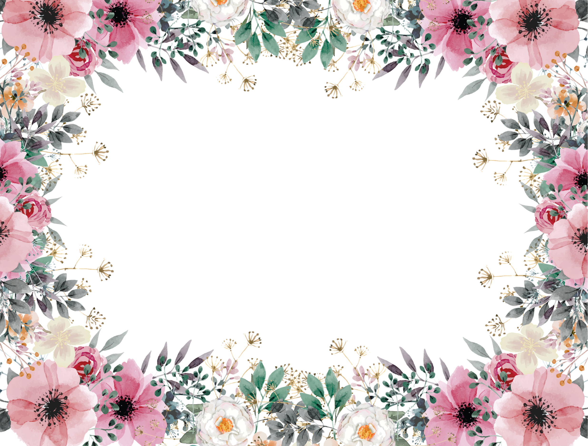
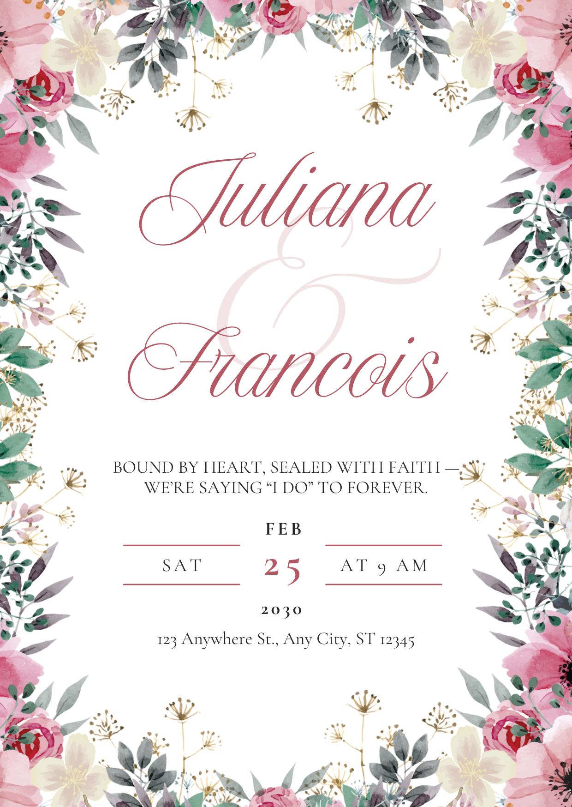

is it possible <!doctype html>
<html lang="en">
  <head>
    <meta charset="UTF-8" />
    <meta name="viewport" content="width=device-width, initial-scale=1.0" />
    <title>Juliana &amp; Francois — Animated Invitation</title>
    <style>
      @font-face {
        font-family: "New Icon Script";
        src: url("fonts/new-icon-script.otf") format("opentype");
        font-display: block;
      }
      @font-face {
        font-family: "Cormorant Garamond";
        src: url("fonts/cormorant-garamond.ttf") format("truetype");
        font-weight: 400;
        font-display: block;
      }
      @font-face {
        font-family: "Cormorant Garamond";
        src: url("fonts/cormorant-garamond-bold.ttf") format("truetype");
        font-weight: 700;
        font-display: block;
      }

      * {
        margin: 0;
        padding: 0;
        box-sizing: border-box;
      }

      html,
      body {
        height: 100%;
        background: #1a1a1a;
        display: grid;
        place-items: center;
        overflow: hidden;
      }

      /* ---- Stage: exact Canva canvas 1240 x 1748, scaled to fit viewport ---- */
      #stage-fit {
        position: relative;
      }
      #stage {
        position: relative;
        width: 1240px;
        height: 1748px;
        background: #ffffff;
        overflow: hidden;
        transform-origin: top left;
      }

      /* ---- Floral border layer ----
     PPTX: shape 1748x1240 at (-254, 254), rotated -90deg about its center,
     image over-stretched: l -7.393% t -9.787% r -5.905% b -11.528% */
      .floral-wrap {
        position: absolute;
        left: -254px;
        top: 254px;
        width: 1748px;
        height: 1240px;
        transform: rotate(-90deg);
        overflow: hidden;
      }
      .floral-wrap img {
        position: absolute;
        left: -129.2px; /* -7.393% of 1748 */
        top: -121.4px; /* -9.787% of 1240 */
        width: 1980.4px; /* 1748 * 1.13298 */
        height: 1504.3px; /* 1240 * 1.21315 */
      }

      /* Ambient life: whole border breathes very gently */
      .floral-anim {
        position: absolute;
        inset: 0;
        animation:
          floral-in 1.6s cubic-bezier(0.22, 0.61, 0.36, 1) both,
          floral-breathe 9s ease-in-out 1.6s infinite alternate;
        transform-origin: 50% 50%;
      }
      @keyframes floral-in {
        from {
          opacity: 0;
          transform: scale(1.035);
        }
        to {
          opacity: 1;
          transform: scale(1);
        }
      }
      @keyframes floral-breathe {
        from {
          transform: scale(1);
        }
        to {
          transform: scale(1.012);
        }
      }

      /* ---- Typography ---- */
      .txt {
        position: absolute;
        text-align: center;
        white-space: pre-wrap;
      }
      .script {
        font-family: "New Icon Script", cursive;
        color: #b45863;
        font-weight: 400;
      }
      .serif {
        font-family: "Cormorant Garamond", serif;
        color: #272727;
      }

      /* Exact geometry from PPTX (px @ canvas scale).
     top values carry a baseline correction: PPT exact line-spacing places the first
     baseline at lnSpc*asc/(asc+desc), CSS half-leads it — delta measured via pixel-diff. */
      #amp {
        left: 460.3px;
        top: 541px;
        width: 403.8px;
        font-size: 338.4px;
        line-height: 270.7px;
        color: rgba(180, 88, 99, 0.169);
      }
      #name1 {
        left: 289.5px;
        top: 374.1px;
        width: 661px;
        font-size: 171.7px;
        line-height: 137.3px;
      }
      #name2 {
        left: 206.3px;
        top: 743.9px;
        width: 827.5px;
        font-size: 171.7px;
        line-height: 137.3px;
      }
      #tagline {
        left: 228.7px;
        top: 989.4px;
        width: 782.7px;
        font-size: 38.7px;
        line-height: 46.5px;
      }
      #feb {
        left: 449.2px;
        top: 1111.8px;
        width: 330.2px;
        font-size: 40.1px;
        line-height: 56.2px;
        letter-spacing: 6.01px;
        font-weight: 700;
      }
      #day25 {
        left: 534.5px;
        top: 1157.6px;
        width: 155.4px;
        font-size: 85.7px;
        line-height: 120px;
        letter-spacing: 12.85px;
        font-weight: 700;
        color: #b45863;
      }
      #sat {
        left: 236px;
        top: 1191.1px;
        width: 315.5px;
        font-size: 40.1px;
        line-height: 56.2px;
        letter-spacing: 6.01px;
      }
      #at9 {
        left: 659.8px;
        top: 1191.1px;
        width: 344.2px;
        font-size: 40.1px;
        line-height: 56.2px;
        letter-spacing: 6.01px;
      }
      #year {
        left: 532px;
        top: 1283.5px;
        width: 155.4px;
        font-size: 40.1px;
        line-height: 56.2px;
        letter-spacing: 6.01px;
        font-weight: 700;
      }
      #address {
        left: 218.8px;
        top: 1359.8px;
        width: 802.4px;
        font-size: 38.6px;
        line-height: 46.3px;
      }

      /* Divider lines: #B45863, 3px, rounded caps */
      .rule {
        position: absolute;
        width: 253.7px;
        height: 3px;
        border-radius: 1.5px;
        background: #b45863;
      }
      #rule-tl {
        left: 266.9px;
        top: 1179.8px;
      }
      #rule-bl {
        left: 266.9px;
        top: 1264.5px;
      }
      #rule-tr {
        left: 705.1px;
        top: 1179.8px;
      }
      #rule-br {
        left: 705.1px;
        top: 1264.5px;
      }

      /* ---- Entrance choreography ----
     Mirrors the Canva MP4 (names first, details second) with softer easing */
      .rise {
        opacity: 0;
        animation: rise 1.1s cubic-bezier(0.22, 0.61, 0.36, 1) both;
      }
      @keyframes rise {
        from {
          opacity: 0;
          transform: translateY(26px);
          filter: blur(7px);
        }
        to {
          opacity: 1;
          transform: translateY(0);
          filter: blur(0);
        }
      }
      .amp-in {
        opacity: 0;
        animation: amp-in 1.5s cubic-bezier(0.22, 0.61, 0.36, 1) both;
      }
      @keyframes amp-in {
        from {
          opacity: 0;
          transform: scale(0.92);
          filter: blur(8px);
        }
        to {
          opacity: 1;
          transform: scale(1);
          filter: blur(0);
        }
      }
      .rule-in {
        transform: scaleX(0);
        animation: rule-in 0.9s cubic-bezier(0.22, 0.61, 0.36, 1) both;
      }
      @keyframes rule-in {
        from {
          transform: scaleX(0);
        }
        to {
          transform: scaleX(1);
        }
      }

      #name1 {
        animation-delay: 0.35s;
      }
      #amp {
        animation-delay: 0.55s;
      }
      #name2 {
        animation-delay: 0.75s;
      }
      #tagline {
        animation-delay: 1.45s;
      }
      #feb {
        animation-delay: 1.65s;
      }
      #day25 {
        animation-delay: 1.75s;
      }
      #sat {
        animation-delay: 1.85s;
      }
      #at9 {
        animation-delay: 1.85s;
      }
      #rule-tl,
      #rule-tr {
        animation-delay: 1.95s;
      }
      #rule-bl,
      #rule-br {
        animation-delay: 2.05s;
      }
      #year {
        animation-delay: 2.15s;
      }
      #address {
        animation-delay: 2.35s;
      }

      @media (prefers-reduced-motion: reduce) {
        .rise,
        .amp-in,
        .rule-in,
        .floral-anim {
          animation: none;
          opacity: 1;
          transform: none;
        }
      }

      /* ---- Debug overlay: press D to compare against Canva PNG export ---- */
      #ref {
        position: absolute;
        inset: 0;
        width: 100%;
        height: 100%;
        opacity: 0;
        pointer-events: none;
        z-index: 10;
      }
      body.debug #ref {
        opacity: 0.5;
      }
      #hint {
        position: fixed;
        bottom: 12px;
        right: 16px;
        font: 12px/1 monospace;
        color: #888;
        z-index: 20;
      }
    </style>
  </head>
  <body>
    <div id="stage-fit">
      <div id="stage">
        <div class="floral-anim">
          <div class="floral-wrap"></div>
        </div>

        <div id="name1" class="txt script rise">Juliana</div>
        <div id="amp" class="txt script amp-in">&amp;</div>
        <div id="name2" class="txt script rise">Francois</div>

        <div id="tagline" class="txt serif rise">
          BOUND BY HEART, SEALED WITH FAITH — WE’RE SAYING “I DO” TO FOREVER.
        </div>

        <div id="feb" class="txt serif rise">FEB</div>
        <div id="day25" class="txt serif rise">25</div>
        <div id="sat" class="txt serif rise">SAT</div>
        <div id="at9" class="txt serif rise">AT 9 AM</div>
        <div id="rule-tl" class="rule rule-in"></div>
        <div id="rule-bl" class="rule rule-in"></div>
        <div id="rule-tr" class="rule rule-in"></div>
        <div id="rule-br" class="rule rule-in"></div>
        <div id="year" class="txt serif rise">2030</div>
        <div id="address" class="txt serif rise">
          123 Anywhere St., Any City, ST 12345
        </div>

        
      </div>
    </div>
    <div id="hint">D&nbsp;= overlay reference&nbsp;&nbsp;R&nbsp;= replay</div>

    <script>
      const stage = document.getElementById("stage");
      const flat = new URLSearchParams(location.search).has("flat");
      function fit() {
        const s = flat
          ? 1
          : Math.min(innerWidth / 1240, innerHeight / 1748) * 0.96;
        stage.style.transform = `scale(${s})`;
        document.getElementById("stage-fit").style.width = 1240 * s + "px";
        document.getElementById("stage-fit").style.height = 1748 * s + "px";
      }
      fit();
      addEventListener("resize", fit);

      addEventListener("keydown", (e) => {
        if (e.key.toLowerCase() === "d")
          document.body.classList.toggle("debug");
        if (e.key.toLowerCase() === "r") {
          document
            .querySelectorAll(".rise,.amp-in,.rule-in,.floral-anim")
            .forEach((el) => {
              el.style.animation = "none";
              void el.offsetWidth;
              el.style.animation = "";
            });
        }
      });
    </script>
  </body>
</html>
